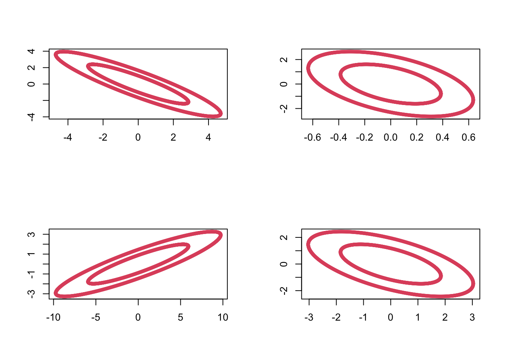

7.2 The Wishart distribution
In univariate statistics the \(\chi^2\) distribution plays an important role in inference related to the univariate normal, e.g. in the definition of Student’s \(t\)-distribution.
The Wishart distribution is a multivariate generalisation of the univariate \(\chi^2\) distribution, and it plays an analogous role in multivariate statistics.
In this section we introduce the Wishart distribution and show that for MVN random variables, the sample covariance matrix \(\mathbf S\) has a Wishart distribution.
Note:
\(W_p(\boldsymbol{\Sigma},n)\) is a probability distribution on the set of \(p \times p\) symmetric non-negative definite random matrices.
Recall that if \(z_1, \ldots, z_n \sim N(0, 1)\), then \[\sum_{i=1}^n z_i^2 \sim \chi^2_n.\] Thus we can see that the Wishart distribution arises from the same kind of process: it is the sum of zero mean (multivariate) normal random variables squared.
In particular, note that when \(p=1\), \(W_1(1,n)\) is the \(\chi_n^2\) distribution and \(W_1(\sigma^2,n)\) is the \(\sigma^2 \chi_n^2\) distribution.
If \(\mathbf X\) is the usual \(n \times p\) matrix with rows \(\mathbf x_i^\top\), then \[\mathbf M= \mathbf X^\top \mathbf X.\]
We can sample from the Wishart distribution in R using the rWishart command. For example, setting \(\boldsymbol{\Sigma}=\mathbf I_2\) and using 2 degrees of freedom, we can generate 4 random samples \(\mathbf M_1, \ldots, \mathbf M_4 \sim W_2(\mathbf I_2, 2)\) as follows:
out <- rWishart(n=4, df=2, Sigma=diag(1,2))Visualizing these by plotting the ellipses with \(\mathbf x^\top \mathbf M_i \mathbf x=c\) for some constant \(c\), we can see the variability in these random matrices:

7.2.1 Properties
We now use the definition of \(W_p(\boldsymbol{\Sigma}, n)\) to prove some important results.
Proof. From the definition, let \(\mathbf M= \sum_{i=1}^n \mathbf x_i \mathbf x_i^\top\), where \(\mathbf x_i \sim N_p(\boldsymbol 0,\boldsymbol{\Sigma})\). Then \[\begin{align*} \mathbf A\mathbf M\mathbf A^\top &= \mathbf A\left(\sum_{i=1}^n \mathbf x_i \mathbf x_i^\top \right)\mathbf A^\top\\ &= \sum_{i=1}^n (\mathbf A\mathbf x_i)(\mathbf A\mathbf x_i)^\top = \sum_{i=1}^n \mathbf y_i \mathbf y_i^\top \end{align*}\] where \(\mathbf y_i = \mathbf A\mathbf x_i \sim N_q(\boldsymbol 0,\mathbf A\boldsymbol{\Sigma}\mathbf A^\top)\), by Proposition 7.1. Now we apply the definition of the Wishart distribution to \(\mathbf y_1,\ldots,\mathbf y_n\) and, hence, \(\sum_{i=1}^n \mathbf y_i \mathbf y_i^\top \sim W_q\left(\mathbf A\boldsymbol{\Sigma}\mathbf A^\top, n \right)\).
Note that an alternative way to write this is as \[\frac{ \mathbf a^\top \mathbf M\mathbf a}{ \mathbf a^\top \boldsymbol{\Sigma}\mathbf a} \sim \chi_n^2.\]
Proof. Applying Proposition 7.7 with \(\mathbf A= \mathbf a^\top\), we see \(\mathbf a^\top \mathbf M\mathbf a\sim W_1( \mathbf a^\top \boldsymbol{\Sigma}\mathbf a, n)\).
If we let \(z_i \sim N(0,1)\), and \(\sigma = (\mathbf a^\top \boldsymbol{\Sigma}\mathbf a)^\frac{1}{2}\), then \(\sigma z_i \sim N(0, \mathbf a^\top \boldsymbol{\Sigma}\mathbf a)\). Thus \[\begin{align*} \sum_{i=1}^n \sigma^2 z_i^2 &\sim W_1(\mathbf a^\top \boldsymbol{\Sigma}\mathbf a, n) \quad \mbox{by the definition of the Wishart distribution}\\ &= \sigma^2 \sum_{i=1}^n z_i \\ &\sim (\mathbf a^\top \boldsymbol{\Sigma}\mathbf a)\chi^2_n \quad \mbox{by the definition of} \chi^2. \end{align*}\]
Proof. From the definition, let \(\mathbf M_1 = \sum_{i=1}^{n_1} \mathbf x_i \mathbf x_i^\top\) and let \(\mathbf M_2 = \sum_{i=n_1+1}^{n_1+n_2} \mathbf x_i \mathbf x_i^\top\), where \(\mathbf x_i \sim N_p(\boldsymbol 0,\boldsymbol{\Sigma})\), then \(\mathbf M_1+\mathbf M_2 = \sum_{i=1}^{n_1+n_2} \mathbf x_i \mathbf x_i^\top \sim W_p(\boldsymbol{\Sigma},n_1 + n_2)\) by the definition of the Wishart distribution.
7.2.2 Cochran’s theorem
Our next result is known as Cochran’s theorem. We use Cochran’s theorem to show that sample covariance matrices have a scaled Wishart distribution.
First though, recall the definition of projection matrices from Section 2.3.3. Namely, that \(\mathbf P\) is a projection matrix if \(\mathbf P^2=\mathbf P\).
We’ll prove this result below. Let’s first understand why it is useful.
Proof. Let \(\mathbf P= {\mathbf H}\equiv \mathbf I_n - n^{-1}{\mathbf 1}_n {\mathbf 1}_n^\top\), the \(n \times n\) centering matrix, where \({\mathbf 1}_n\) is the \(n \times 1\) vector of ones.
\(\mathbf H\) is a projection matrix (property 1. of 2.4), and clearly, \(\mathbf I_n - \mathbf P=n^{-1} {\mathbf 1}_n {\mathbf 1}_n^\top\) has rank \(1\), and thus \(\mathbf H\) must have rank \(n-1\). Therefore, using Cochran’s Theorem (7.1),
\[
\mathbf X^\top \mathbf H\mathbf X\sim W_p(\boldsymbol{\Sigma}, n-1).
\]
But
\[\mathbf X^\top \mathbf H\mathbf X=n\mathbf S,\]
(Property 6. in Section 2.4)
and consequently, \(n\mathbf S\sim W_p(\boldsymbol{\Sigma}, n-1)\), as required.
Thus, sample covariance matrices have a scaled Wishart distribution. This result will be key in the next section, as it will allow us to compute the sampling distribution of a test statistic that we will then use in hypothesis test.
We will now prove Cochran’s theorem.
Proof. Non-examinable
We first prove the result for the case \(\boldsymbol{\Sigma}= {\mathbf I}_p\).
Using the Spectral Decomposition Theorem 3.3 and noting that the eigenvalues of projection matrices must be either \(0\) or \(1\), we can write \[ {\mathbf P}=\sum_{j=1}^r \mathbf v_j \mathbf v_j^\top \qquad \hbox{and} \qquad (\mathbf I_n-{\mathbf P})=\sum_{j=r+1}^n \mathbf v_j \mathbf v_j^\top \] where \(\mathbf v_1, \ldots , \mathbf v_n \in \mathbb{R}^n\) are mutually orthogonal unit vectors. Then \[\begin{align} \mathbf X^\top \mathbf P\mathbf X&= \mathbf X^\top \left (\sum_{j=1}^r \mathbf v_j \mathbf v_j^\top \right) \mathbf X\nonumber \\ & =\sum_{j=1}^r \mathbf X^\top \mathbf v_j \mathbf v_j^\top \mathbf X=\sum_{j=1}^r \mathbf y_j \mathbf y_j^\top, \tag{7.5} \end{align}\] and similarly, \[\begin{equation} \mathbf X^\top (\mathbf I_n -\mathbf P) \mathbf X=\sum_{j=r+1}^n \mathbf y_j \mathbf y_j^\top, \tag{7.6} \end{equation}\] where \(\mathbf y_j=\mathbf X^\top \mathbf v_j\) is a \(p \times 1\) vector.
Claim The \(\mathbf y_j\) are iid multivariate normal random variables: \[\mathbf y_j \sim N_p({\mathbf 0}_p, \mathbf I_p).\]
If the claim is true, then it immediately follows from the definition of the Wishart distribution that (7.5) has a Wishart \(W_p(\mathbf I_p,r)\) distribution and (7.6) has a Wishart \(W_p(\mathbf I_p, n-r)\) distribution. Moreover they are independent becasue the \(\mathbf y_j\) are all independent.
Then to prove the general case with covariance matrix \(\boldsymbol{\Sigma}\), note that if \(\mathbf x_i\sim N_p(\boldsymbol 0, \boldsymbol{\Sigma})\), then we can write \(\mathbf x_i=\boldsymbol{\Sigma}^{1/2}\mathbf z_i\) where \(\mathbf z_i \sim N_p(\boldsymbol 0, \mathbf I_p)\).
Thus \[\begin{align*} \mathbf X^\top \mathbf P\mathbf X&= \boldsymbol{\Sigma}^{1/2} \mathbf Z^\top\mathbf P\mathbf Z\boldsymbol{\Sigma}^{1/2}\\ &\sim \boldsymbol{\Sigma}^{1/2} W_p(\mathbf I_p, r) \boldsymbol{\Sigma}^{1/2} \mbox{ by the result above}\\ &\sim W_p(\boldsymbol{\Sigma}, r) \end{align*}\] where the final line follows by Proposition 7.7. Here, \(\mathbf X\) and \(\mathbf Z\) are matrices with rows given by \(\mathbf x_i\) and \(\mathbf z_i\) respectively.
To complete the proof it only remains to prove the claim that \(\mathbf y_j \sim N_p({\mathbf 0}_p, \mathbf I_p).\)
We can immediately see that the \(\mathbf y_j\) must be MVN of dimension \(p\), and that they have mean vector \(\boldsymbol 0_p\). To see the covariance and independence parts, note that the \(k^{th}\) element of \(\mathbf y_j\) is \[y_{jk} = \sum_{i=1}^n x_{ik}v_{ji}\] and so the \(k, l^{th}\) element of the covariance matrix between \(\mathbf y_j\) and \(\mathbf y_{j'}\) is
\[\begin{align*} {\mathbb{E}}(y_{jk} y_{j'l}) &= {\mathbb{E}}(\sum_{i=1}^n x_{ik}v_{ji} \sum_{i'=1}^n x_{i'l}v_{j'i'})\\ &=\sum_{i=1}^n\sum_{i'=1}^n v_{ji} {\mathbb{E}}(x_{ik}x_{i'l})v_{j'i'}\\ &=\begin{cases} 0 &\mbox{ if } k\not = l \mbox{ as } x_{ik} \mbox{ independent of } x_{il} \\ \sum_{i=1}^n v_{ji} v_{j'i} &\mbox{ if } k=l\mbox{ as }x_{ik} \mbox{ is independent of } x_{i'k} \mbox{ for }i\not=i'. \end{cases}\\ \end{align*}\]
Finally \[\begin{align*} \sum_{i=1}^n v_{ji} v_{j'i}&= \mathbf v_j^\top \mathbf v_{j'}\\ &=\begin{cases} 1 &\mbox{if } j=j'\\ 0 &\mbox{otherwise}. \end{cases} \end{align*}\]
Thus \({\mathbb{C}\operatorname{ov}}(\mathbf y_j, \mathbf y_{j'}) = \boldsymbol 0_{p\times p}\) for \(j\not = j'\) and \({\mathbb{V}\operatorname{ar}}(\mathbf y_j) = \mathbf I_p\). Thus we have proved the claim once we recall that uncorrelated implies independence for multivariate normal random variables.